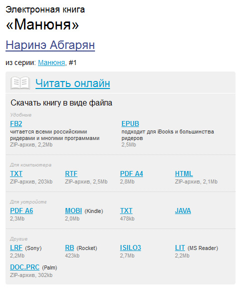

Немного о форматах электронных книг

Устройства для чтения электронных книг (так называемые ридеры) уже давно превратились из чего-то очень экзотического в такое же привычное бытовое устройство, как и смартфон. Пользователи очень быстро поняли, в чем прелесть ридеров: в них можно закачать сотни (если не тысячи) книг в электронном виде, глаза при чтении не портятся (электронные чернила не светятся), можно настраивать любые параметры текста, включая гарнитуру шрифта и его размер, книга сама запоминает страницу, на которой вы остановились, ну и так далее - перечислять всякие удобства по сравнению с использованием бумажных книг можно очень долго.
Однако у пользователей (особенно начинающих) есть при этом одна проблема: по Сети книги гуляют в различных форматах, коих немало: FB2, EPUB, MOBI, PDF, RTF, TXT и так далее.
Хорошо еще, когда на сайте предлагают на выбор разные форматы - например, на сайте , где этот выбор очень широк.

Виды форматов
Однако для начинающих пользователей все эти EPUB, FB2 и прочие DjVu - темный лес, поэтому давайте разберемся, что они собой представляют, чем отличаются и в каких устройствах используются.
Итак, форматы электронных книг (документов).
1. FB2 (FictionBook) - формат (стандарт), разработанный Дмитрием Грибовым и группой энтузиастов. Отлично подходит для создания структурированных книг, занимает небольшой объем, отлично архивируется, хорошо конвертируется в другие форматы. Представляет собой XML-файл, структурно похожий на письмо электронной почты.
Главный недостаток - так как это фактически российская разработка, в мире этот формат совершенно неизвестен и почти не поддерживается ни одним из брендовых ридеров - Sony, Amazon, Barnes&Noble, Kobo.
На "Литресе" написано, что FB2 "поддерживается всеми российскими ридерами", но это не совсем точно. FB2 поддерживается почти всеми китайскими ридерами с украинским или российским программным обеспечением. Также FB2 может поддерживаться и известными западными ридерами (например, Sony), в которые установлена специальная российская прошивка. (Ну и недавно для последнего ридера Sony PRS-T1 вышла официальная прошивка, поддерживающая FB2.)
2. EPUB (Electronic PUBlishing) - наиболее распространенный в мире (и уже очень распространенный в России) формат электронных книг. По структуре он похож на веб-сайт, упакованный в архив, и если FB2 может распространяться как в раскрытом виде, так и в архиве ZIP (многие ридеры умеют читать FB2 в ZIP), то EPUB - это по определению книга, упакованная архиватором.
EPUB поддерживается практически любыми ридерами - как западными, так и китайскими (российско-украинскими). Поэтому это наиболее предпочтительный формат. (За редкими исключениями.)
3. MOBI - специализированный формат, созданный специально для ридера Amazon Kindle и, соответственно, поддерживаемый только этим ридером. Причем Kindle никакие другие форматы электронных книг (кроме PDF и TXT, но это разговор особый) не поддерживает.
4. TXT - обычный формат текстового документа. Поддерживается всеми ридерами, но читать книги в TXT - это для законченных мазохистов. Ни разметки, ни нормальных переносов, ни выравнивания по формату, но зато есть обрывы строк и прочие прелести. В топку!
5. PDF (Adobe Portable Document Format) - один из наиболее распространенных форматов электронных документов (как правило, не книг). PDF не особенно удобно читать на ридерах, кроме того, он очень громоздкий, поэтому в PDF для ридеров, как правило, записывают только документы со всякими формулами, иллюстрациями и прочим.
6. LRF - специальный формат для электронных книг от Sony. Однако уже практически вытеснен форматом EPUB, который Sony поддерживает.
7. DjVu (произносится «дежавю́») - формат для хранения плотно сжатых отсканированных документов - например, старых книг. В ридерах используется очень редко, потому что читать отсканированные книги на ридере почти невозможно из-за плохого качество отображения и маленького размера экрана.
8. RTF (Rich Text Format) - универсальный формат для хранения текстовых документов. В ридерах используется очень редко - так, для совместимости.
9. DOC - формат документов Microsoft Office. Некоторые ридеры его поддерживают, но читать документы на ридере обычно мало кому нужно. Вот как-то не для того они сделаны. Правда, в DOC по Сети до сих пор гуляют некоторые книги, но уж проще их переконвертировать в тот же EPUB.
Существуют и всякие другие форматы, однако этим можно не забивать себе голову - вряд ли они вообще когда-нибудь пригодятся.
Большинству пользователей, за редкими исключениями, обычно вполне достаточно формата EPUB. Его поддерживают почти все ридеры (кроме Kindle), книги в этом формате имеют небольшой размер, хорошую структуру, позволяют включать оглавление, иллюстрации и так далее.
Многие онлайновые библиотеки хранят книги в этом формате, также в торрентах можно найти огромные формата EPUB.
Какие выводы? EPUB - ваш выбор, будь то у вас западный ридер (Sony, Barnes&Noble, Kobo) или китайско-российско-украинский.
А вот для Kindle нужно будет искать книги в формате MOBI или, что намного проще, просто переконвертировать тот же EPUB или FB2 в этот формат. Подобная процедура производится легко и быстро с помощью специальной программы. Как это делается - рассмотрим в отдельной статье.